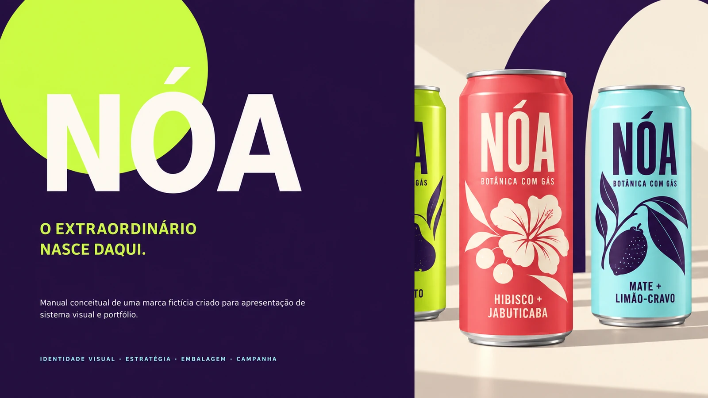
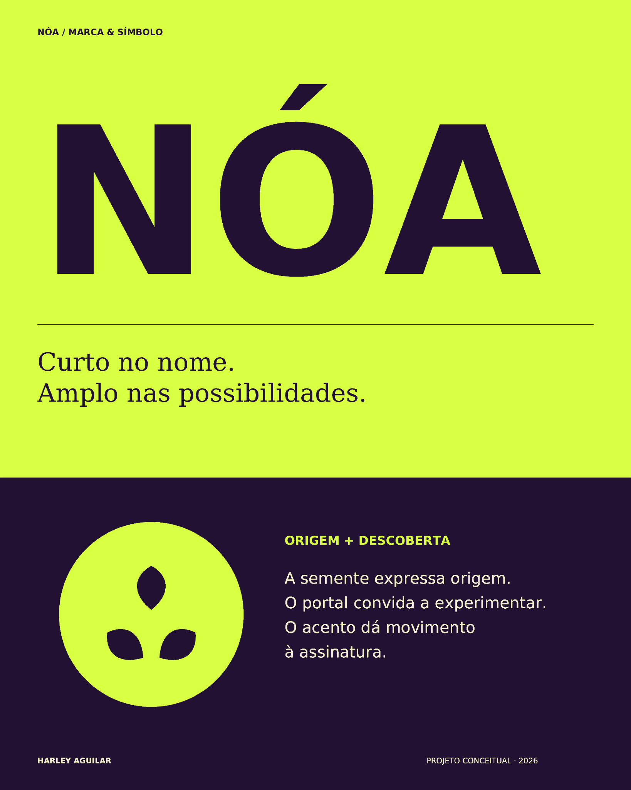
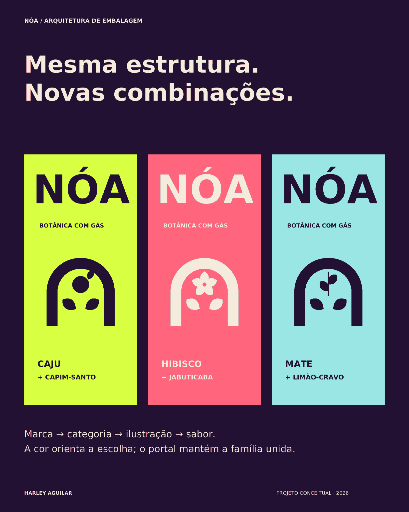
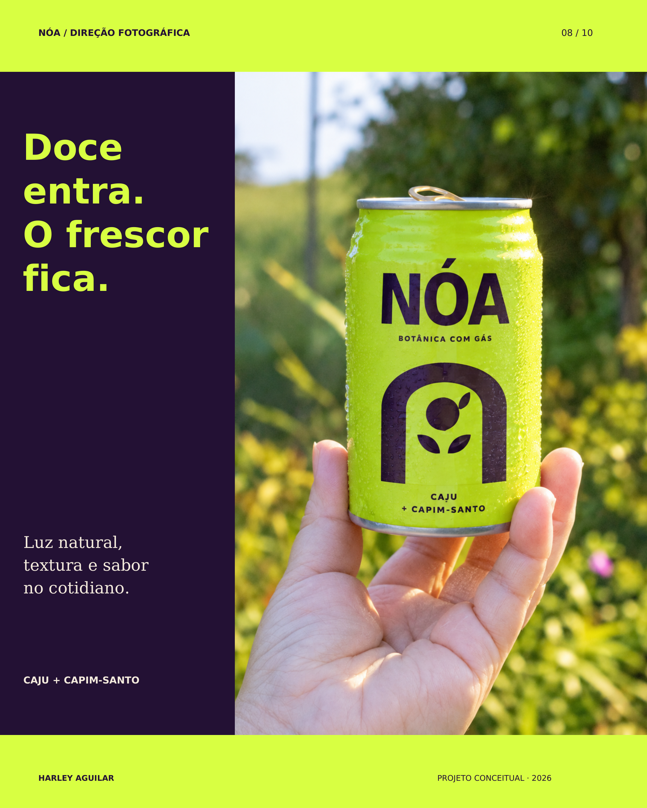
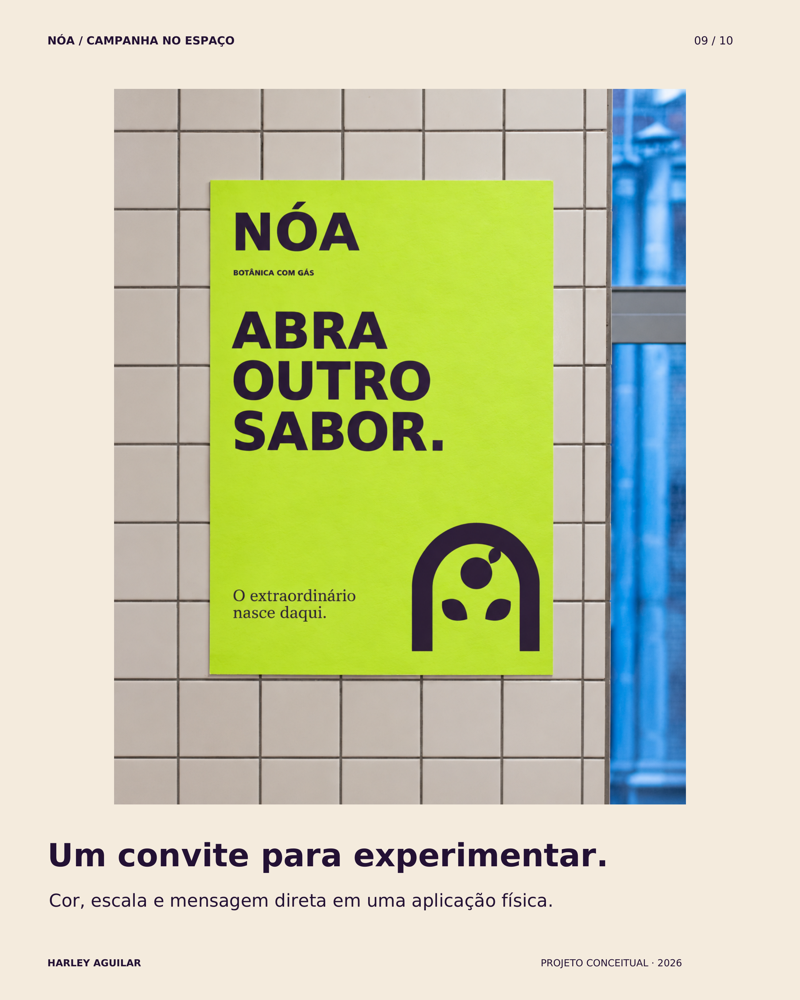
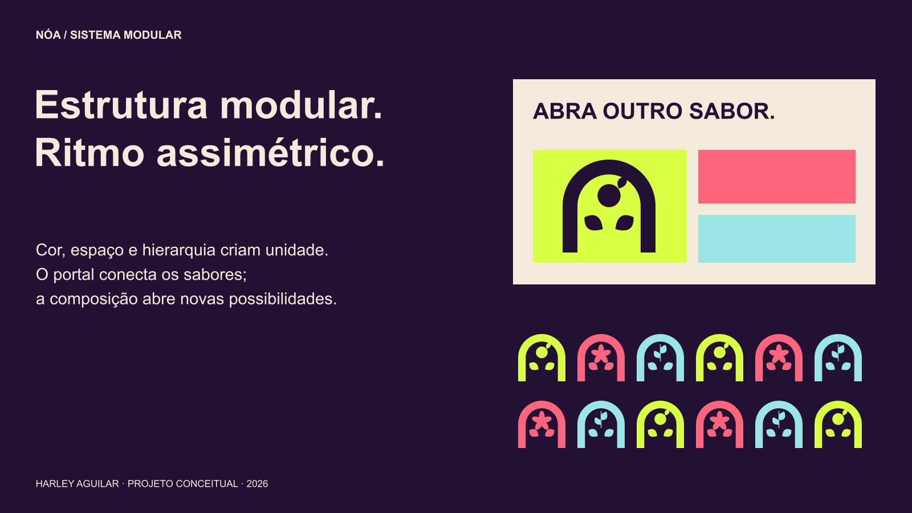
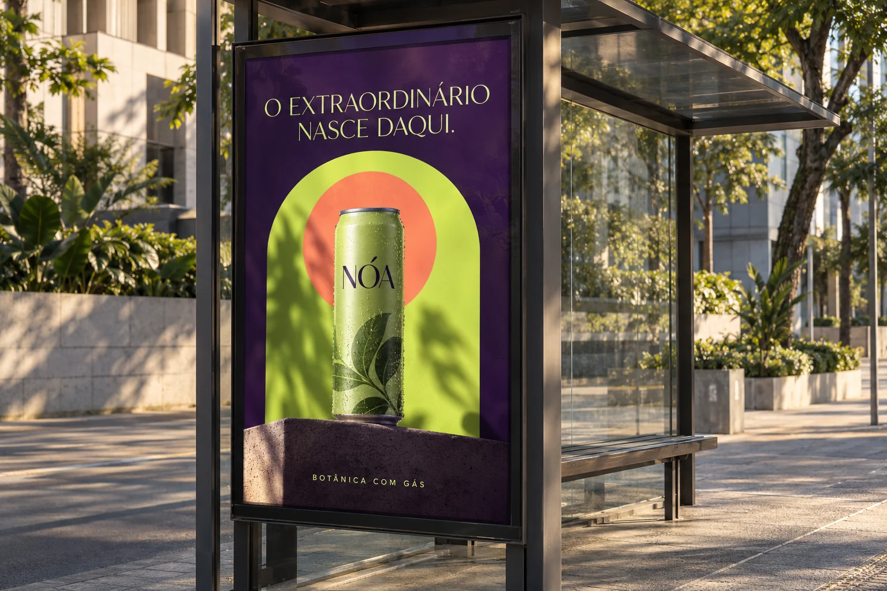

← Todos os projetos01 / Identidade / Embalagem
NÓA
Bebidas botânicas brasileiras
Sistema visual criado para equilibrar naturalidade, personalidade e reconhecimento em cada sabor.
Estratégia de marca · Naming · Identidade · Embalagem

01 / NÓA — O extraordinário nasce daqui · Clique para ampliar

02 / Marca e símbolo — origem e descoberta · Clique para ampliar

03 / Arquitetura de embalagem — três combinações · Clique para ampliar
 04 / Família de produtos — três sabores, uma presença · Clique para ampliar
04 / Família de produtos — três sabores, uma presença · Clique para ampliar

05 / Direção fotográfica — doce entra, o frescor fica · Clique para ampliar

06 / Campanha no espaço — um convite para experimentar · Clique para ampliar

07 / Composição e sistema modular · Clique para ampliar

08 / Aplicação da campanha em mídia exterior · Clique para ampliar
 09 / Aplicações em embalagem, ecobag e boné · Clique para ampliar
09 / Aplicações em embalagem, ecobag e boné · Clique para ampliar